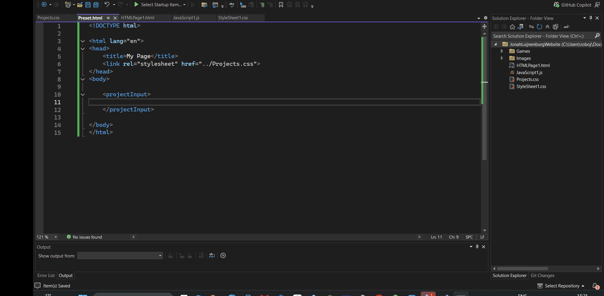
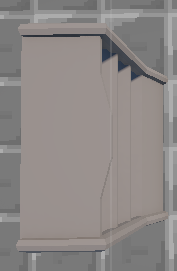

Store of Steam is a shop management game where your shop is a train. You have to move the train to different locations based on what item you need to buy or sell, and you have to grow your train to have more space for selling.

The building in this game is grid-based. This means that the player can only place items on a grid. This makes it easier to implement the building system and also makes it easier for the player to understand where they can place items. Multi-tile buildings are crucial for this game. How this works is by choosing one tile as the main tile. From that tile, the rest is calculated, such as rotation and placement.
Devs: 2 Artists: 1 Current Development time: 1 month Engine: Unity Building, pathfinding and stocking mechanics are done.